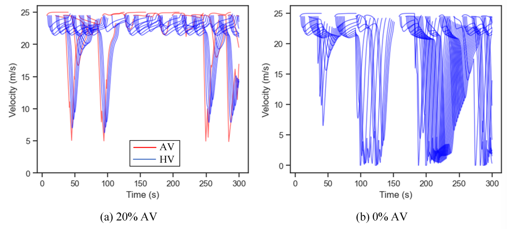
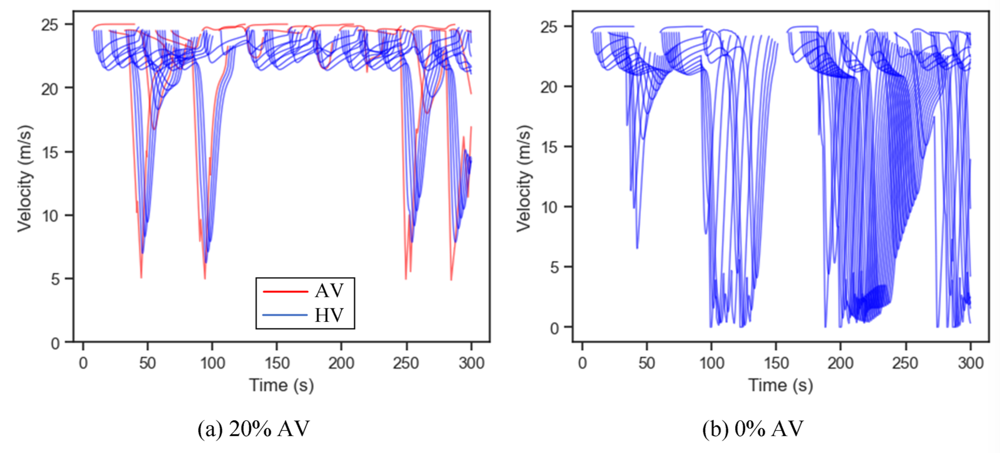

Data-driven Transport Modelling in Urban Areas
Dr. Minh Kieu
TARLab & Transportation Research Centre
University of Auckland, New Zealand
Lab website:
https://transportanalytics.nz

- From 2020: Senior Lecturer, University of Auckland, NZ
- 2018-2019: Research Fellow, University of Leeds, UK
- 2016-2018: Research Scientist, Data61, CSIRO, Australia
- 2011-2016: PhD and Research Associate at Queensland University of Technology, Australia
The focus of my research
Improving transport resilience during and after natural disasters
Autonomous / Electric vehicles
Agenda
1. A Resilient Aotearoa New Zealand Transport System
2. Dynamic Wireless Charging
3. Guided Traffic Control of Mixed Platoon project
Funding for highway improvements and operations are highest and increasing. However...

Earthquakes and landslides have been major issues in New Zealand
Rapid Resilience: Modelling transport infrastructure recovery after natural disasters
Main Research Challenges
1. The recovery process of transport infrastructures are complex
2. Costs are often difficult to find
3. Disasters could come from many sources, e.g. earthquakes or after period of severe weather
Rapid Resilience: Modelling transport infrastructure recovery after natural disasters
Optimising Pre-Disaster Evacuation Strategies Using Shared Autonomous Vehicles: A Dynamic and Stochastic Approach
Main Research Challenges
1. Persistent uncertainties: number of people, availability of AVs
Optimising Pre-Disaster Evacuation Strategies Using Shared Autonomous Vehicles: A Dynamic and Stochastic Approach
Case study in Auckland, New Zealand
The TB-DRL comprises of an Encoder, a Decoder, and a branch \& bound multi-head attention mask scheme
Wirelessly Powered Transport Infrastructure for a Low-carbon Future (2021-2026)
MBIE Endeavour Programme
Charging of Electric Vehicles: Wired or Wireless
Wireless: Static or Dynamic
5-year research programme between Transport, Electrical, Science and Bussiness School at the University of Auckland
In collaboration with ASPIRE (5-year NSF Research programme): Utah State, Purdue, Colorado, Virginia Tech, etc https://aspire.usu.edu/
Dynamic Wireless Power Transfer for Electric Vehicles

Strategic planning for dynamic charging lanes
Traffic control/management for DWPT
Vehicle routing and control
Human behaviours: how drivers will react to DWPT?
Incentivise drivers to reduce traffic congestion or traffic crashes: combination with congestion charging?
Can Autonomous Vehicles operate continuously now?
Smart routing + DWC
Multi-objective optimisation: too complex for existing algorithms


Deep Reinforcement Learning with Heterogeneous Multi-head attention mechanism
How does routing works?


We can achive lower costs and more stable state-of-charge
Our algorithm smartly anticipates the reduction in energy levels to top-up with wireless charging
Sensitivity analysis
Continous AV project: Publications
Wang, Kieu and Ranjitkar (2024) Enabling Continuous Operation of Shared Autonomous Vehicles With Dynamic Wireless Charging. IEEE Transactions on Intelligent Transportation Systems.
Wang et al. (TBA) Deep Reinforcement Learning based Approach to Shared Autonomous Vehicles Pickup, Delivery, and Charging Problem. IEEE Internet of Things Journal (Major Revision)

What if we are stuck on traffic?

Split to two levels now to deal with traffic congestion
Also consider battery state-of-health now
Our algorithm vs literature
Continous AV project (with traffic congestion): Publications
Wang et al. (TBA) A Two-Stage Deep Reinforcement Learning Framework for to Enable Continuous Operation Shared Autonomous Vehicles under Dynamic Traffic Scenarios. Transportation Research Part C: Emerging Technologies (Under review)
Summary of Dynamic Wireless Charging project
AVs can operate continuously without stopping!
State-of-charge, state-of-health and traffic are not really an issue
Future works:
Incidents
Battery capacity required
Mixed Platoon Guided Control
Autonomous vehicles can help us merge like a zip!
Mixed Platoon Guided Control

 

The higher the penetration rate of AVs, the better the results
They can help us deal with incidents, too
Summary of Guided Control for Mixed Platoon project
AVs can guide human vehicles to reduce congestion and unsafe breaking
It works, but more challenging than we first thought
Future works:
Uncertainty
Intersection
Funding!
Call for collaboration
I am interested in Transport Resilience and Autonomous Vehicles
Autonomous vehicles in transport resilience / recovery from natural disasters or incidents
QuakeCoRE (https://quakecore.nz)
Data-driven Transport Modelling in Urban Areas
Thank you!
Questions?
Lab website:
https://transportanalytics.nz